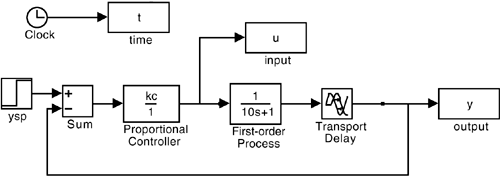
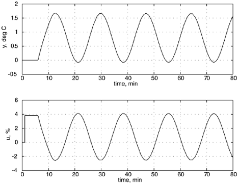

| [ Team LiB ] |
|
M6.2 Closed-Loop Time-Domain SimulationHere, we begin by using the SIMULINK diagram shown in Figure M6-1. Figure M6-1. Simulink diagram. For best results, choose a stiff integrator, such as ode15s (stiff/NDF), from the "parameters" pull-down menu. The system is on the verge of instability when kc = 3.8 %/°C, as shown in Figure M6-2; the ultimate proportional gain is then kcu = 3.8 %/°C. The period of oscillation (ultimate period, Pu) is approximately 17.2 minutes. Both of these values can be obtained from frequency-response analysis, as shown in Section M6.3. Notice that the manipulated variable action is constant from t = 1 to t = 6 minutes. This is due to the initial "proportional kick." The manipulated input does not change until the process output is observed to change at t = 6 minutes (remember there is a 5-minute time delay). If we used a controller with integral action, the manipulated input would have kept increasing during this interval. Figure M6-2. Closed-loop response for a setpoint change of 1°C at time = 1 minute, with kc = 3.8 %/°C. The period of oscillation (Pu, peak-to-peak time) is 17.2 minutes. |
| [ Team LiB ] |
|